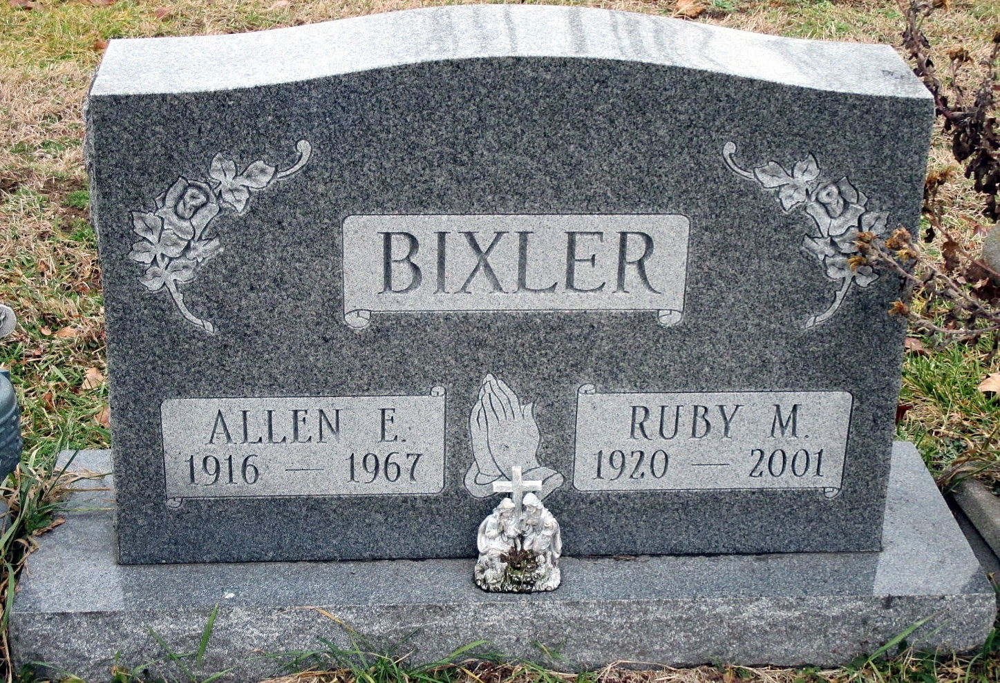

Allen Ellsworth Bixler 1916 - 1967
[ Home ] | [ Calendar ] | [ Surnames Index ] | [ Census Index ] | [ Family History ]The 11th of 12 children of Thomas Bixler (a farmer) and Cora Bufford, Allen Bixler, the fourth cousin twice-removed on the mother's side of Nigel Horne, was born in Clay, Owen, Indiana, USA on Nov 9, 19161,2 and had 1 child with Ruby M McDaniel: Nina Darlene. On Feb 9, 1920, he was living at his birthplace4.
He died on Mar 14, 1967 in Kentwood, Kent, Michigan, USA2,3 and was buried in Wayland, Allegan, Michigan on Mar 17, 19673.
Parents
- Thomas Isaac was born on Mar 15, 1874
- Cora Pearl was born on Mar 26, 1874
Children
- Nina Darlene was born on Jun 3, 1940
Citations
- Indiana Births, 1880-1920
- Social Security Death Index - Findmypast
- Michigan, Deaths and Burials Index, 1867-1995
- US Census 1920 - Findmypast (was age 3 and the son of the head of the household)
Media
Ellsworth Bixler - Ruby McDaniel - headstone

Ellsworth Bixler - birth certificate

Allen Ellsworth Bixler
Allen Ellesworth Bixler - 2
US Census 1920 - USC/1920/004965836/00459/042
Social Security Death Index - USBMD/SSDI/307143649
Family Tree

Generated by ged2site. Last updated on Jun 11, 2024